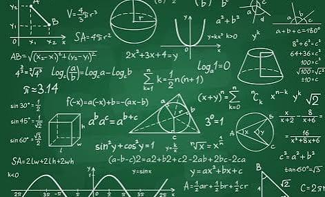

My Hobbies & Interests

Badminton
I stay active and energetic by playing badminton. It is a fast paced game that keeps my reflexes sharp and serves as a great physical outlet away from the computer screen.

Exploring Apple Architecture
I have a strong interest in evaluating laptop hardware specifications, specifically digging into Apple MacBook chip variants and architectures to analyze their performance for heavy software engineering workloads.

Marvel Cinematic Universe Tracking
I enjoy tracking the MCU timeline in release order. I love diving into the timeline mechanics of shows like Loki that are based on time and physics.

Solving Complex Math & Statistics
In my downtime, I genuinely enjoy working through complex variable theory, conformal mappings, and exploring probability distributions or statistical regression models.